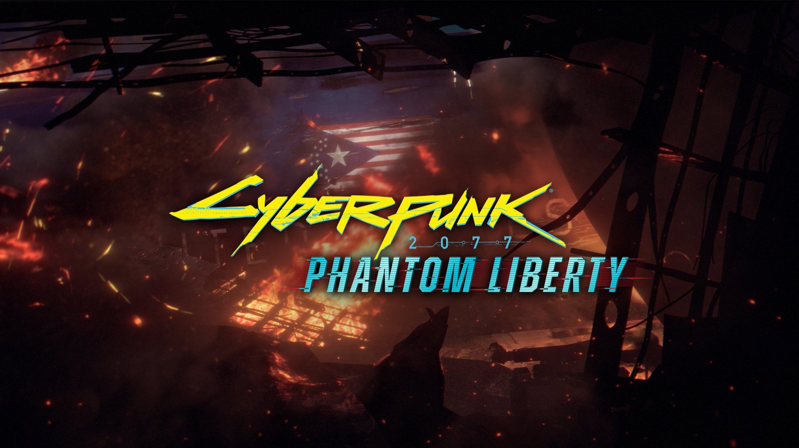

Большинство мобильных игр живёт всего три года
Авторы Bear and Breakfast объявили об отсрочке крупных контентных обновлений
Топ-5 градостроительных симуляторов, которые стоит купить на Keysforgamers
Число игроков в первую Life is Strange превысило 20 миллионов
Число игроков в первую Life is Strange превысило 20 миллионов
Metal: Hellsinger получит апдейт и новые песни 7 декабря
SpongeBob SquarePants: The Cosmic Shake скоро прибудет на iOS и Android
<
>
Здесь могла бы быть ваша реклама!
Cyberpunk 2077. У CD Projekt Red получилось!
Кто бы что ни говорил о CD Projekt Red , по одному пункту студия безусловно заслуживает уважения: она постоянно растёт, рискует и развивается — как технологически, так и творчески. С каждым новым «большим» релизом польский коллектив выходит на принципиально новый уровень качества чуть ли не по всем фронтам. Вспомните, как менялся « Ведьмак »: серия началась с дешёвой и кособокой CRPG, продолжение подобралось ближе к АА, а финал трилогии вообще стал поп-культурным феноменом. Всего три игры, но каждая совершила космический шаг вперёд по сравнению с предыдущей.
Что касается Cyberpunk 2077 , то у меня есть две новости. Плохая — аналогичного прыжка в качестве на фоне третьего «Ведьмака» не случилось. Хорошая — игра всё равно получилась очень и очень достойной.
От редакции: наша рецензия писалась по ПК-версии и актуальна только для неё. После релиза выяснилось, что на консолях ужасные проблемы с производительностью, которые могут очень сильно испортить ваше впечатление от игры.
Неоновые демоны
Cyberpunk 2077 оставляет такую массу впечатлений, что их нелегко упорядочить и разложить по полочкам. Даже спустя одно полное и вдумчивое (насколько позволяли сроки эмбарго) прохождение кажется, что перед рецензией не помешало бы пробежать сюжет ещё минимум дважды — просто для полноты ощущений. Однако если вам нужно краткое мнение вообще без спойлеров, то… Не знаю, мне остаётся лишь пожать плечами. Лично я получил примерно то, чего и ждал: хорошую RPG от CD Projekt Red. Не «революционную», а просто во всех смыслах хорошую. Ни больше ни меньше.
И в данном случае это вовсе не упрёк, а, напротив, самый искренний комплимент из всех, что приходят мне на ум. Да, игра едва ли дотягивает до того мифического идеала, который многие нарисовали себе в мечтах за семь лет ожидания, — хотя это, думаю, ни для кого не сюрприз. Да, если захотеть, то можно легко найти множество мелочей, которые CD Projekt Red в теории могла бы сделать ещё круче. Но при этом у меня ни разу не возникло чувства, что авторы где-то не сдержали своих обещаний или срезали углы.
Вопреки всем тревожным слухам и опасениям, Cyberpunk 2077 не стала жертвой собственных амбиций. Она не смотрится сырой или выпущенной второпях — если у команды и был повод несколько раз переносить дату релиза, то по самой игре даже близко не скажешь, что она рождалась в муках. Совсем наоборот: по Cyberpunk 2077 видно, что студия действительно горела идеей и сделала именно ту игру, какую хотела.
Комментарии:

Ссылки:
https://vk.com/
https://web.telegram.org/
VK
Telegram
Контакты:
https://vk.com/id5639
https://e.mail.ru/inbox/?back
При использовании материалов активная ссылка на gamestart.ru обязательна
Сайт использует IP адреса, cookie и данные геолокации Пользователей сайта, условия использования содержатся в Политика конфиденциальности и Пользовательское соглашение Полное или частичное воспроизведение материалов сайта и журнала допускается только с согласия редакции.
Мнение авторов и посетителей сайта может не совпадать с мнением редакции.

Внимание! Большая часть сайта считана на людей старше 18 лет!
Реклама на GameStart https://e.mail.ru/inbox/?back